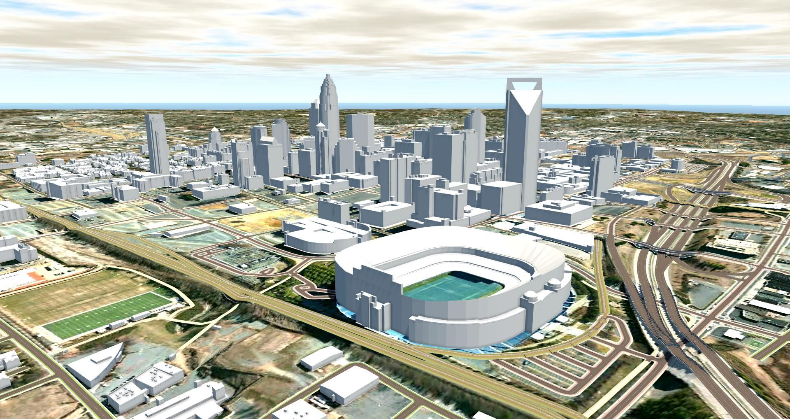

BIM Use: Site Analysis

Site Analysis
A process in which BIM and GIS tools are used to evaluate properties in a given area to determine the most optimal site location for a future project.
The site data collected is used to first select the site and then position the building based on other criteria such as solar orientation, access points, and utility connections.
- Use calculated decision making to determine if potential sites meet the required criteria according to project requirements, technical factors, and financial factors.
- Decrease costs of utility demand and demolition.
- Increase energy efficiency through optimal orientation.
- Minimize risk of hazardous material exposure.
- Maximize return on investment (ROI).
- Visual impact assessment on surrounding environment.
- GIS Software (e.g., ArcGIS, QGIS)
- Design Authoring Software (e.g., Civil 3D, Revit)
- Topographic Survey Data
- Ability to manipulate, navigate, and review a 3D model.
- Knowledge and understanding of local authority’s system (GIS, database information).
- Ability to overlay geospatial data with building models.